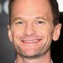

Es el personaje principal de la serie. Siempre soñó con ser un gran arquitecto, pasando años en una empresa de diseño en Nueva York antes de crear por su cuenta un estudio de arquitectura. Uno de los aspectos más característicos de su personalidad es el hecho de que piensa demasiado, algo que sus amigos le recriminan una y otra vez. Ted desea imitar la vida de Marshall: tener una relación seria, estable y duradera, con la que pueda formar una familia. Ese es el motivo principal de la serie: se narra la búsqueda de Ted por una esposa, atravesando múltiples relaciones fallidas.
Barney Stinson (Neil Patrick)

Es un exmujeriego, partidario de los trajes y mago, al que le gusta jugar al laser tag y usar las palabras "sublime" y "legendaria". Barney se empeña mucho en mostrar a sus amigos la sublimidad que posee. Es el autor de El Código de los Colegas, de Bro on the Go —similar a El Código de los Colegas, pero pensado para el día a día— y, por último, de El Playbook. Barney fue criado por una madre soltera, junto con su hermano mayor James.
Robin Scherbatsky (Cobie Smulders)
Trabaja como reportera investigadora de noticias en World Wide News. Cuando era adolescente, fue una cantante de pop llamada Robin Sparkles, que recorrió centros comerciales a través de Canadá tras su menor éxito "Let's Go to the Mall" y su debacle "Castillos en la Arena". Algunas de sus idiosincrasias incluyen una predilección por las peleas y su particular forma de pronunciar ciertas palabras, como "lanzador". También, con frecuencia, es objeto de burla por su tendencia a reír mientras miente, así como por sus constantes alusiones a lugares y hechos históricos exclusivos de Canadá.